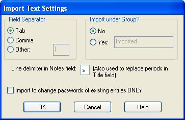

Password Safe allows you to import password information from other formats. These files may be generated by other applications, exported from a spreadsheet, or even written by hand using Notepad or a similar text editor.
The formats that Password Safe supports are:
In addition, to 'import' a subset of entries from another Password Safe database, just start Password Safe (assuming you permit multiple instances via Manage->Options->System tab) and open the other database, whilst having your normal database open in another instance. Then you can simply drag and drop any entries or groups to your open database from this 'import' database.
Text files used to import password entries consist of one or more password entries. Each field within an entry is separated by a field separator and each entry may consist of one or more lines. Details on the expected format of the imported text file may be found in the "Plain Text Export & Import Format" section.
The field separator used in the text file being imported and a default group name to import the new entries into can be configured before processing the file.

XML (eXtensible Markup Language) is a popular format for transferring data between applications. Password Safe can import XML files that were generated according to the schema defined in the file pwsafe.xsd, which is provided as part of the distribution.
You may also import a TXT file exported from Keepass V1 (tested on files created by V1.19b).
The following fields are converted to the PasswordSafe equivalents:
Each new entry starts with a line beginning with '[' and ending with as ']'. The text between these will be imported as the 'Title' of this entry.
Each piece of information is on one line and the following tags are at the beginning of each line:
The following fields are ignored:
Note that times in PasswordSafe must be earlier than January 19, 2038. Any time greater than this is treated as invalid and that the associated field is unset.
Please note, you MUST check the box "Encode/replace newline characters by '\n'" during the export from Keepass V1 or the import may fail or give unexpected results.
You may also import a CSV (Comma Separated Values) file exported from Keepass V1 (tested on files created by V1.19b).
The following fields are converted to the PasswordSafe equivalents:
The following fields are ignored:
Note that times in PasswordSafe must be earlier than January 19, 2038. Any time greater than this is treated as invalid and that the associated field is unset.
Please note, you MUST check the box "Encode/replace newline characters by '\n'" during the export from Keepass V1 or the import may fail or give unexpected results.
PasswordSafe cannot directly import a XML file exported by KeePass V1 as the fields are too different. However, we have provided a XSL Transfom file (KPV1_to_PWS.xslt). Once exported from KeePass V1, the programs below be used to process it with this XSLT file to produce a PasswordSafe compatible XML file that can then be imported in PasswordSafe V3.26 or later.
This XSLT file conforms to V1.0 of XSLT as described in http://www.w3.org/TR/xslt
During testing under Windows, the following was found:
All four programs are free.
PasswordSafe cannot import any file created by KeePass V2 - even the KeePass V1 CSV format available from this program, as it does not allow the important setting of the "Encode/replace newline characters by '\n'" requirement. However, it is possible to export a KeePass V2 database as a KeePass V1 database. You may then export this to either a TXT, CSV or XML file and imported as described above.